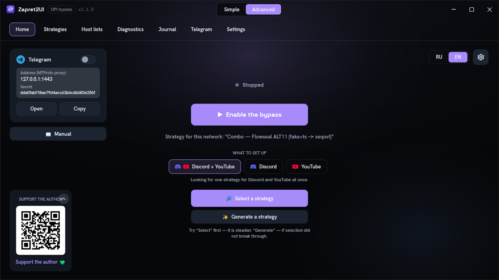

Getting started
Quick start
From download to a working Discord. The first two steps are usually enough; the rest are for when your provider turns out to be stubborn.
What you need
- Windows 10 or 11, x64. An x86 build of the engine exists, but the 64-bit one is the main one.
- Administrator rights for the bypass: the engine loads a network driver into the kernel. The built-in Telegram proxy does not need administrator rights.
- An internet connection on first launch, to download the engine.
You do not need to install .NET, Visual C++ or anything else: the program ships as a single self-contained file.
Five steps
-
Download it and run it as administrator
Zapret2UI.exeis on the releases page. No installation required: put it wherever you like and run it. Right-click the icon and choose "Run as administrator", or simply accept the UAC prompt.Why this is mandatory. The engine has to load the WinDivert network driver into the Windows kernel. Without administrator rights it cannot, and the bypass will not turn on. The shield icon on the launch button is expected.
On first launch the program downloads the
winws2engine itself and verifies the download against its SHA-256 checksum. That takes a few seconds. -
Press "Turn on bypass"
The big button on the main screen. The status dot above it turns green and the caption changes to "Running".
Button greyed out, or the bypass dies immediately? Open the "Journal" tab: the reason will be there. Most often it is the antivirus (step 5 below), or the engine has not finished downloading on the very first launch. Wait a minute and try again.
-
Check Discord and YouTube
Open the app or the site. In most cases that is where it ends.
If it does not open, wait five or ten seconds and refresh: connections the browser held open before you turned the bypass on may not re-establish instantly. Still nothing? That is normal — the same technique does not work with every provider. Move on to the next step.
-
Let it pick a strategy
The "Diagnostics" tab, the "Select" button. The program launches the ready-made strategies one by one, checks whether the target sites are reachable under each, and keeps the one that opens the most. A window with live progress appears: just wait for it to finish.
Before that, on the main screen, you can choose the target:
Discord + YouTube,DiscordorYouTube. The narrower the target, the more precise the result.Did not help? In the same place, press "Generate". This takes longer — the program works through many combinations of parameters — but the result is a strategy assembled specifically for your network. It is saved, and from then on you can turn it on with one click.
-
Deal with the antivirus
Bypass tools regularly trigger false positives: the engine may be deleted or blocked silently. Settings, the "Add to exclusions" button: one click registers the program and the engine folder with Windows Defender and the firewall.
If the engine has already been deleted, add the exclusions and then update it from the same Settings tab, or simply restart the program: it will download again.
If none of the steps helped, the symptom-by-symptom breakdown has its own page: Troubleshooting. That is also where the engine's exit codes live, along with the "diagnostics is all green but the site still will not open" case.
Telegram, separately
Telegram is blocked differently from websites: usually by IP address rather than by name. DPI bypass cannot help with that, so the program has a separate built-in proxy that solves the problem another way.
- Turned on with the "Telegram through proxy" switch on the main screen or on the Telegram tab.
- No administrator rights needed, and it works independently of the main bypass button.
- The "Open in Telegram" button registers the proxy in the client automatically. By hand: Settings, Data and Storage, Proxy, Add, MTProto, then fill in the address, port and secret.
More about how it is built: Interface, the Telegram tab.
Set up once
Once a working strategy is found, people usually never come back to it. Three settings help.
| Setting | What it gives you |
|---|---|
| Per-network memory works on its own |
A working strategy is tied to the current network by the router's address. Home, work and mobile internet each get their own, and the right one turns on automatically. Everything is stored locally. |
| Start with Windows | The program starts when you log in, already elevated, without a UAC prompt every time. A separate checkbox turns the bypass on straight away as well. |
| Auto-repair | The program watches availability and, if the provider updates its filters and the bypass stops working, quietly picks a working variant again. |
Simple and advanced mode
The switch at the top centre of the window.

It makes sense to start with simple mode: there is nothing there you can break by accident. Advanced is for when you want to pick a strategy by hand, look at the diagnostics or check the journal. Everything on those tabs is covered in the Interface section.